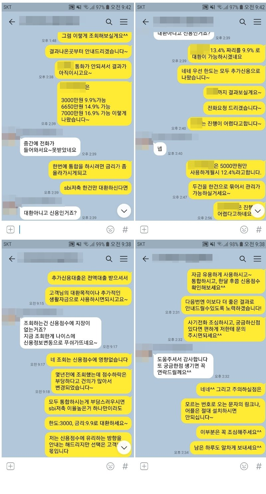

연봉200% 대출 사용 직장인, 추가대출 5000만원 승인사례!
안녕하세요^^ 뱅크앤론 상담사 유미광 과장입니다^^ 오늘은 제가 진행해드린 고** 고객님의 대출
사례를 소개해 드리겠습니다. 고** 고객님께서는 현 직장에 2년째 근무중이시며, 월소득 200만원의
4대 가입직장인이셨습니다. 사용중이신 대출로는 SBI저축 2건 각각 2240만원, 2126만원을 이용중이
셨습니다. 대출 통합을 위해 은행쪽으로문의하셨지만 소액만 가능하시다는 안내를 받고, 후기가 좋고,
믿을 만한 업체인 뱅크앤론으로 문의주셨다고하셨습니다. 이에 저는 통합으로 한도가 및 이율이 잘나
오는 금융사쪽으로 조회해드려, 한 금융사에서 추가자금으로 최대 7000만원까지 진행가능하다는 안
내를 받으셨고, 고객님의 자금 필요목적에 맞는 금액만큼인 5000만원을 12.4%로 진행하셨습니다. 이
에 고** 고객님께서도 매우 만족하셨습니다. 자세한 사항은 아래 저와 고**고객님의 카톡대화 내용을
참고하실 수 있습니다. 감사합니다^^
